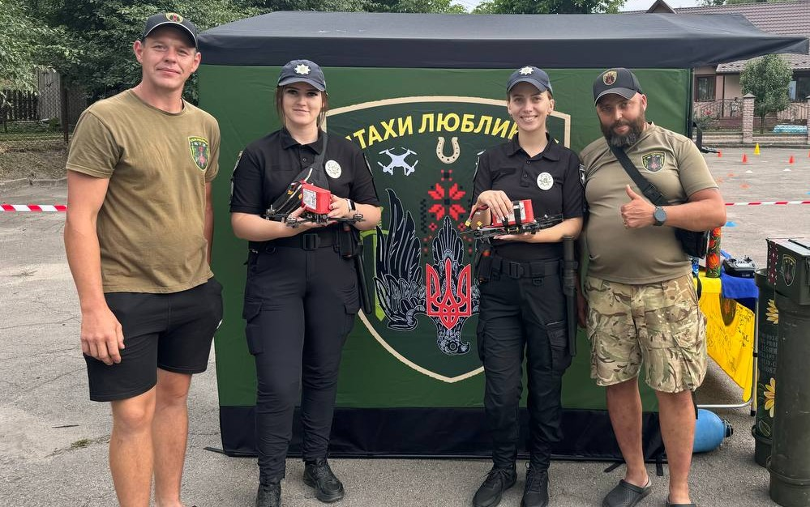
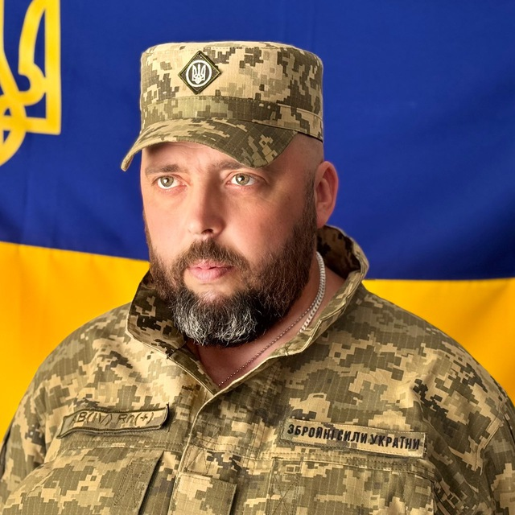

Наша історія

Ми, волонтерська організація «Птахи Люблинця», робимо все можливе, щоб підтримати наших захисників на передовій. Ми займаємось виготовленням дронів для військових, допомагаючи їм у виконанні бойових завдань і наближаючи перемогу. Для нас важливо, щоб кожен солдат знав: ми піклуємось про них і чекаємо їхнього повернення додому.
Окрім технічної підтримки, ми тісно співпрацюємо з місцевими школами та громадами, збираючи для військових листи, малюнки та солодощі. Разом із нашими дітьми, вчителями та небайдужими людьми ми формуємо пакунки з теплом і любов’ю, які передаємо на фронт. Наша мета – не тільки допомогти, а й підтримати бойовий дух наших воїнів, показати їм, що вони не самі.
Наша команда

Микола Баглик
Волонтер, військовий
Олександр Кузьмін
Волонтер
Іван Шеремета
Волонтер, викладач
Основні події за присутності нашої команди